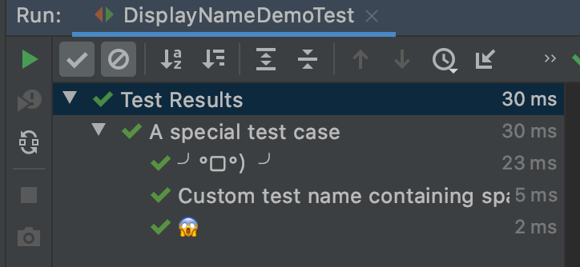

显示名
重要性：★★★☆☆
可以通过@DisplayName注解给测试类和测试方法自定义名称。
显示名中可以包含空格、特殊字符甚至表情符号等。显示名可以出现在测试报告、测试运行器和IDE中，增强可读性。
下面是代码例子：
import org.junit.jupiter.api.DisplayName;
import org.junit.jupiter.api.Test;
@DisplayName("A special test case")
class DisplayNameDemo {
@Test
@DisplayName("Custom test name containing spaces")
void testWithDisplayNameContainingSpaces() {
}
@Test
@DisplayName("╯°□°）╯")
void testWithDisplayNameContainingSpecialCharacters() {
}
@Test
@DisplayName("😱")
void testWithDisplayNameContainingEmoji() {
}
}
在IDEA中执行上面的测试，呈现结果如下：

1. 显示名生成器
JUnit允许创建定制的显示名生成器，通过@DisplayNameGeneration注解来进行配置。如果@DisplayName和@DisplayNameGeneration同时存在，前者更优先。
下面是代码例子：
import java.lang.reflect.Method;
import org.junit.jupiter.api.DisplayName;
import org.junit.jupiter.api.DisplayNameGeneration;
import org.junit.jupiter.api.DisplayNameGenerator;
import org.junit.jupiter.api.Nested;
import org.junit.jupiter.api.Test;
import org.junit.jupiter.params.ParameterizedTest;
import org.junit.jupiter.params.provider.ValueSource;
class DisplayNameGeneratorDemo {
@Nested
@DisplayNameGeneration(DisplayNameGenerator.ReplaceUnderscores.class)
class A_year_is_not_supported {
@Test
void if_it_is_zero() {
}
@DisplayName("A negative value for year is not supported by the leap year computation.")
@ParameterizedTest(name = "For example, year {0} is not supported.")
@ValueSource(ints = { -1, -4 })
void if_it_is_negative(int year) {
}
}
@Nested
@DisplayNameGeneration(IndicativeSentences.class)
class A_year_is_a_leap_year {
@Test
void if_it_is_divisible_by_4_but_not_by_100() {
}
@ParameterizedTest(name = "Year {0} is a leap year.")
@ValueSource(ints = { 2016, 2020, 2048 })
void if_it_is_one_of_the_following_years(int year) {
}
}
static class IndicativeSentences extends DisplayNameGenerator.ReplaceUnderscores {
@Override
public String generateDisplayNameForClass(Class<?> testClass) {
return super.generateDisplayNameForClass(testClass);
}
@Override
public String generateDisplayNameForNestedClass(Class<?> nestedClass) {
return super.generateDisplayNameForNestedClass(nestedClass) + "...";
}
@Override
public String generateDisplayNameForMethod(Class<?> testClass, Method testMethod) {
String name = testClass.getSimpleName() + ' ' + testMethod.getName();
return name.replace('_', ' ') + '.';
}
}
}
+-- DisplayNameGeneratorDemo [OK]
+-- A year is not supported [OK]
| +-- A negative value for year is not supported by the leap year computation. [OK]
| | +-- For example, year -1 is not supported. [OK]
| | '-- For example, year -4 is not supported. [OK]
| '-- if it is zero() [OK]
'-- A year is a leap year... [OK]
+-- A year is a leap year if it is divisible by 4 but not by 100. [OK]
'-- A year is a leap year if it is one of the following years. [OK]
+-- Year 2016 is a leap year. [OK]
+-- Year 2020 is a leap year. [OK]
'-- Year 2048 is a leap year. [OK]
2. 设置缺省的显示名生成器
可以在JUnit平台配置文件junit-platform.properties中设置缺省的显示名生成器：
junit.jupiter.displayname.generator.default = \
org.junit.jupiter.api.DisplayNameGenerator$ReplaceUnderscores
所有的显示名生成器都要实现DisplayNameGenerator接口。
测试类和测试方法中的显示名按照下面的优先规则确定：
@DisplayName注解的值，如果存在的话；- 通过调用
@DisplayNameGeneration注解中定义的DisplayNameGenerator，如果存在的话； - 通过调用平台配置文件
junit-platform.properties中设置缺省的显示名生成器，如果存在的话； - 通过调用
org.junit.jupiter.api.DisplayNameGenerator.Standard显示名生成器。